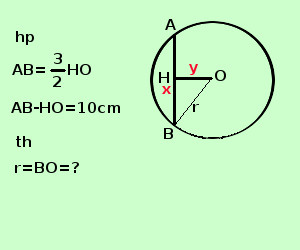

|
sviluppo Risolvere il seguente problema La misura della corda di un cerchio e' 3/2 della sua distanza dal centro. Determinare il raggio del cerchio sapendo che la corda differisce di 10cm dalla sua distanza dal centro A destra traccio la figura e scrivo l'ipotesi(hp) e la tesi(th)  Per scrivere l'ipotesi scorro il testo e lo riscrivo in linguaggio geometrico: "La misura della corda di un cerchio e' 3/2 della sua distanza dal centro" scrivo AB=3/2 HO "la corda differisce di 10cm dalla sua distanza dal centro " scrivo AB=HO-10 La tesi dice che devo trovare il raggio, per trovare il raggio ho bisogno della corda AB e della distanza OH; applicando il teorema di Pitagora al triangolo BOH trovero' il raggio BH Come incognite indico la corda e la distanza dal centro rileggo il problema scrivendolo in linguaggio algebrico AB = x OH = y "la corda di un cerchio e' 3/2 della sua distanza dal centro" si scrive x = 3/2 y 2x = 3y 2x - 3y = 0 "la corda differisce di 10cm dalla sua distanza dal centro " si scrive x = 10cm - y x + y = 10 Faccio il sistema
risolvo con il metodo di sostituzione, ricavo y dalla seconda equazione e lo sostituisco nella prima
quindi AB = 5cm HO = 5cm ora posso trovare il raggio BO trovo prima BH BH = AB/2 = 5/2 cm applico il teorema di Pitagora al triangolo rettangolo BHO per trovare BO BO2 = BH2 + OH2 = (5/2 cm)2 +(5/2 cm)2= 25cm2 + 25/4 cm2 =125/4 cm2 BO = √125/4 cm2 = 15/2 cm = 7,5 cm Il raggio vale 7,5 cm |